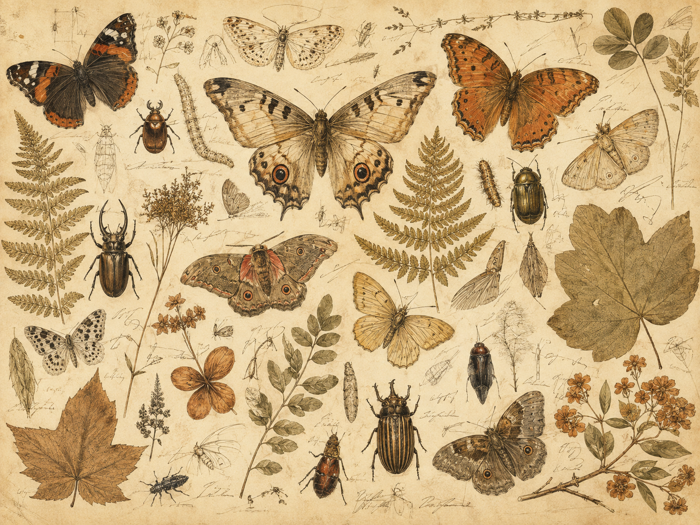
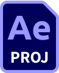
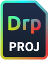
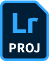
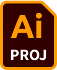

2022 — 现在
深圳恩浦诺科技有限公司
影像内容负责人 · 摄影师 / 摄像师
- 工作内容：主导众筹项目的视频策划、拍摄与后期制作，并负责新品发布、线上活动及电商产品图、场景图的视觉内容。
- 工作成就：CEBA Rapi 众筹项目实际筹得 55,472 美元，超出目标 1,109.4%。
SELECTED WORKS · 2018—2025
我是黄臻，影像创作者与剪辑师。专注于把品牌、人物与现场的细微瞬间，整理成有温度且有节奏的视觉叙事。

SELECTED ARCHIVE
A WORKING RECORD
2022 — 现在
2024
TOOLS OF THE TRADE

After Effects
DaVinci Resolve
Lightroom
Illustrator